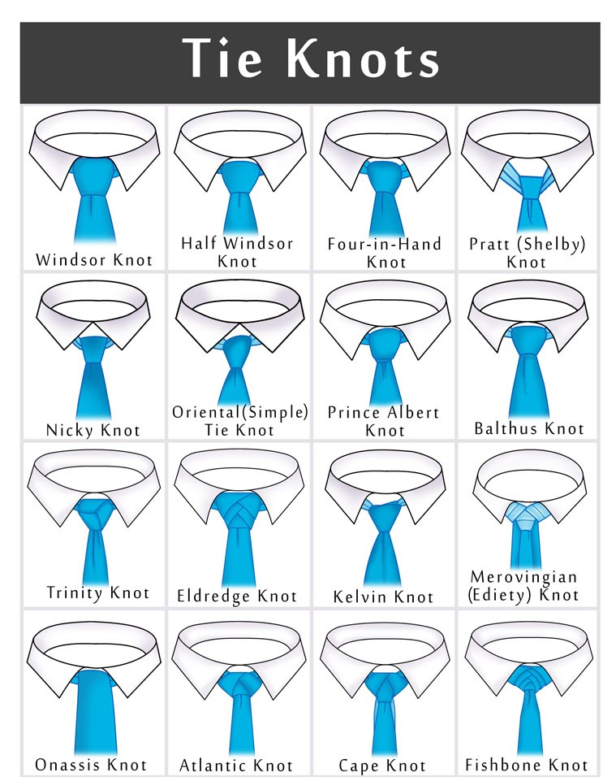

the Tie
Tie types
We can separate the ties into two main groups, the bowl and plain ties. The Occasion and clothing will
decide which one can we choose. The bowl tie exclusively match with tuxedo (every other clothe should be
avoided). Wear a bow tie exclusively for tuxedos.
For the blazers and suit jackets you should wear a normal, hand knotted tie.
For a men it is important to tie his own tie, newer wear a pre tied tie.
How to tie a tie
There are many ways to tie a tie, but like most, in this case a simplest solution is best. Oriental Knot is not only easy to tie but perfect for all occasions and like the real style marks it doesn't go out of style either.

Start with the backside of the tie facing away from you, the wide end is on the right and the small end is on the left. The tip of the small end should rest slightly above your belly-button (this will vary depending on your height and the length & thickness of your tie). Move only the active (wide) end.

Wide end under the small end to the left.

Across the small end to the right.

Up into the neck loop from underneath.

Down through the loop you've just made in the front.

Pull down on the wide end to tighten. Slide the knot up to adjust.
Tie knot types
Tie Rules
- The tie's width has to be the same as the shirt's collar.
- The tie's width has to be just as long it touches the belt line.
- The tie's color has to be darker than the shirt.
- The tie's pattern or colour can't be the same as the pocket square.
- The tie's classic colours are black, navy blue and red.
- If you want to wear a patterned tie, choose one with a small, light coloured patterns.
- If you use a tiebar it should go between the third and fourth buttons of your dress shirt.
- Never wear a pre tied tie.
- Never wear a shiny tie.